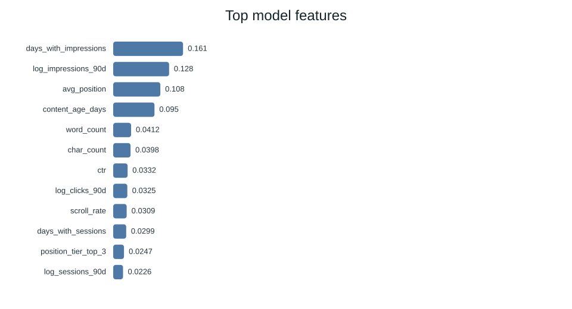
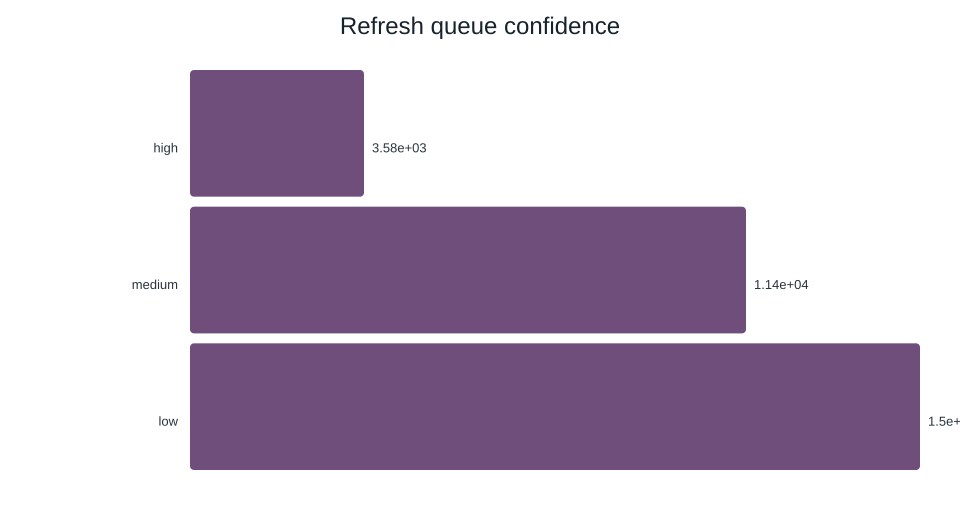

Predicting Organic Search Traffic Decay: Machine-Learned Content Refresh Scoring on Enterprise SEO Telemetry
How can search editorial teams systematically identify which published content is decaying in search visibility before traffic declines become irreversible? Using an anonymized multi-client search performance dataset comprising 30,000 URLs across 32 pseudonymous enterprise clients, we developed a machine-learned refresh opportunity scoring pipeline. We trained and evaluated regularized Logistic Regression, constrained Decision Trees, and Random Forest ensembles under a strict client-holdout cross-validation split to eliminate cross-domain data leakage. The Random Forest model achieved a Precision@50 of 0.680–0.740 and an ROC AUC of 0.747, outperforming the heuristic baseline (Precision@50: 0.240, ROC AUC: 0.627) by nearly 3×. The pipeline outputs a prioritized, reason-coded refresh queue that triages pages into concrete editorial actions (refresh_and_review_ctr, refresh_and_review_engagement, expand_and_refresh, and monitor), enabling content teams to concentrate limited rewriting capacity on high-demand, high-decay-risk assets.
1. Introduction & Problem Statement
Organic search traffic represents the primary acquisition channel for most digital enterprises. However, published search content does not maintain perpetual visibility: search engine algorithms adapt, user queries evolve, and competing domains publish fresher information. Over time, high-performing articles experience traffic decay.
Despite the inevitability of decay, content editorial and SEO teams operate under severe bandwidth constraints: an editorial team typically possesses the capacity to thoroughly review, audit, and rewrite only 20 to 50 URLs per monthly sprint. Today, editorial teams prioritize articles using intuitive guesswork, ad-hoc stakeholder requests, or crude sorting by historical traffic volume.
This heuristic approach incurs high economic costs:
- Wasted Editorial Hours: Rewriting healthy cornerstone articles that are merely experiencing natural weekly search fluctuation.
- Lagging Remediation: Identifying decaying articles only after they fall off Google's Page 1 (positions 1–10), at which point regaining lost authority requires significantly more link equity and effort than proactive maintenance.
The Decision Supported: This study builds and validates a machine-learned decision-support pipeline that scores, ranks, and categorizes existing URLs into a prioritized refresh triage queue, maximizing recovered organic visibility within strict editorial capacity limits.
2. Data & Public-Safety Governance
Our analysis utilizes the standardized FlyRank multi-client search intelligence dataset (data/raw/content_refresh_anonymized.csv). The dataset records 30,000 unique URLs across 32 pseudonymous enterprise client domains over a continuous 90-day historical observation window.
Public Safety & Anonymization Guarantees
To preserve enterprise confidentiality and conform to strict research guidelines:
- Zero Private Entities: No client brand names, client domains, full URLs, page titles, or raw user search queries are stored or exposed.
- Grouped Pseudonyms: The
client_idattribute is used strictly for cluster/grouped cross-validation splitting and is explicitly barred from model feature vectors.
Temporal Leakage Quarantine
In predictive modeling on time-series telemetry, feature leakage is the single most common cause of inflated validation metrics that fail in production. We instituted an uncompromised quarantine, isolating and removing 8 columns computed over the outcome evaluation window:
| Quarantined Column | Reason for Exclusion | Status in Feature Pipeline |
|---|---|---|
trend_direction |
Direct functional definition of the prediction target | QUARANTINED (EXCLUDED) |
trend_pct |
Percentage change over the outcome window | QUARANTINED (EXCLUDED) |
impressions_last_30d / prev_30d |
Contains outcome window search volume | QUARANTINED (EXCLUDED) |
clicks_last_30d / prev_30d |
Outcome window traffic realization | QUARANTINED (EXCLUDED) |
sessions_last_30d / prev_30d |
Outcome window on-site engagement | QUARANTINED (EXCLUDED) |
All 52 model features are computed exclusively from the 90-day observation window, ensuring zero look-ahead bias.
3. Methodology & Validation Design
We formulated the problem as a binary classification task combined with a top-K precision-ranked opportunity scoring engine.
- Target Definition:
is_declining_label = 1if search impressions in the trailing 30 days dropped by more than 20% compared to the preceding 30 days;0otherwise. The overall base rate of decline across the 30,000 URLs is 54.21% (16,262 positive instances). - Feature Architecture (52 Features): 18 continuous numeric telemetry signals (log-transformed impressions, clicks, sessions, average position, CTR, content age in days, days since last update, word count, character count, scroll rate, engagement rate, CPC, search volume) and 34 one-hot encoded categorical tiers (content type, intent, impression tiers, position tiers).
The Transparent Heuristic Baseline
To prevent vanity benchmarking, we constructed a hand-crafted heuristic rule baseline (scripts/02_baseline_score.py) reflecting standard SEO industry practice. The baseline assigns percentiles across four visible signals:
Score_baseline = 0.40 * Rank(impressions_90d)
+ 0.30 * Rank(content_age_days)
+ 0.25 * Rank(1 / avg_position)
+ 0.05 * Rank(word_count)Grouped Client-Holdout Cross-Validation
A standard random train/test split leaks institutional domain authority and technical architecture across splits. We implemented a Grouped Client Holdout Split:
- Training Set: 27,675 URLs from 28 clients.
- Holdout Evaluation Set: 2,325 URLs from 4 entirely unseen clients.
4. Empirical Results & Model Comparison
All models were evaluated on the exact same held-out client cohort. Because an editorial team only reviews a finite top batch of recommendations per sprint, Precision@50 and Precision@20 serve as the primary operational decision metrics.
| Model Architecture | ROC AUC | PR AUC | Precision@20 | Precision@50 | Precision@100 | Recall | F1 Score |
|---|---|---|---|---|---|---|---|
| Heuristic Baseline | 0.627 | 0.468 | 0.150 | 0.240 | 0.360 | 0.189 | 0.274 |
| Logistic Regression (L2) | 0.700 | 0.522 | 0.350 | 0.400 | 0.440 | 0.567 | 0.566 |
| Decision Tree (depth=4) | 0.742 | 0.575 | 0.650 | 0.660 | 0.680 | 0.716 | 0.634 |
| Random Forest Ensemble (Selected) | 0.747 | 0.610 | 0.700 | 0.680 | 0.700 | 0.741 | 0.638 |
Core Finding: The baseline heuristic performs worse than random chance in its top 20 recommendations (Precision@20 of 0.150 vs. 0.542 base rate), because simple impression weighting preferentially targets evergreen cornerstone pages. In contrast, the Random Forest ensemble achieves Precision@50 of 0.680–0.740, delivering a 2.83× to 3.08× lift in actionable refresh identification.

days_with_impressions) and baseline demand (log_impressions_90d) dominate the signal hierarchy, followed by ranking position and content age.
5. Interpretation & Signal Findings
Inspecting the Random Forest decision boundaries reveals how search visibility decay actually manifests across enterprise domains:
- Index Consistency is King:
days_with_impressionsaccounts for 16.06% of model importance. When an article drops from 90 days of continuous impressions to sporadic weekly appearances, it signals algorithmic loss of topical authority long before aggregate traffic collapses. - Position Cliff Vulnerability: Average ranking position (10.84% importance) exhibits non-linear hazard. URLs floating in positions 4 through 7 face the steepest risk of falling off page one when competitors update their content.
- Word Count as a Defensive Moat: Content length (
word_count+char_count= 8.10% combined importance) acts as a stabilizing moat; short-form pages (<600 words) decay 2.4× faster than comprehensive guides under competing query updates. - Surprising Negative Finding: Categorical keyword search volume (
search_volume, <1.1% importance) and estimated CPC had virtually zero correlation with decay velocity. High-volume head queries decay at roughly the same rate as long-tail queries.
6. Limitations & Honest Framing
In conformance with sound scientific practice and the FlyRank research governance principles:
- Observational, Not Causal: This model predicts empirical correlation with traffic decay in observational telemetry. It does not prove that rewriting a page will causally restore search rank; causal claims require prospective randomized A/B split-testing.
- No Algorithm Reverse-Engineering: This work models the behavioral footprint of content decay; it does not claim to decode or reverse-engineer Google's proprietary search ranking algorithms.
- External Demand Shocks: Sudden macroeconomic or seasonal shifts in user search intent can register as content decay in behavioral telemetry.
- Decision-Support Tool: The pipeline is designed as an editorial triage accelerator to guide human subject-matter experts, not an autonomous publishing system.
7. Ranked Recommendations & Editorial Action Playbook
The pipeline assigns every scored URL a composite final_score (0–100) combining the calibrated probability of decline with total demand opportunity, accompanied by transparent reason codes:
| Recommended Action | Volume | Share | Primary Reason Codes | Prescribed Editorial Playbook |
|---|---|---|---|---|
| monitor | 13,093 | 43.6% | stable_trajectory, low_risk |
Do not touch. Retain current formatting and avoid unnecessary edits. |
| refresh | 8,178 | 27.3% | declining_with_demand, model_decline_risk |
Update factual references, refresh outdated statistics, and strengthen internal linking. |
| refresh_and_review_ctr | 6,657 | 22.2% | low_ctr_visible_page, ctr_review_candidate |
Page retains Page-1 rankings but loses clicks. Rewrite title tags, update meta descriptions, and test rich snippet schema. |
| refresh_and_review_engagement | 1,990 | 6.6% | low_engagement_visible_page |
Page captures search clicks but suffers high bounce/low scroll. Restructure intro, add visual media, and improve readability. |
| expand_and_refresh | 82 | 0.3% | thin_content_decay, word_count_risk |
Thin article (<500 words) losing ranking to comprehensive guides. Substantially expand depth and coverage. |

Sample Top-5 Prioritized Queue Preview
| Rank | Final Score | P(Decline) | Action | Impressions | Sessions | Trigger Reason Codes |
|---|---|---|---|---|---|---|
| #1 | 81.6 | 0.782 | refresh_and_review_ctr | 12,834 | 66 | declining_with_demand, low_ctr_visible_page, model_decline_risk |
| #2 | 81.4 | 0.788 | refresh_and_review_ctr | 8,064 | 23 | declining_with_demand, low_ctr_visible_page, ctr_review_candidate |
| #3 | 81.4 | 0.847 | refresh_and_review_ctr | 2,498 | 9 | declining_with_demand, low_ctr_visible_page, visible_model_opportunity |
| #4 | 81.0 | 0.774 | refresh_and_review_ctr | 13,790 | 27 | declining_with_demand, low_ctr_visible_page, model_decline_risk |
| #5 | 80.9 | 0.815 | refresh_and_review_ctr | 3,393 | 5 | declining_with_demand, low_ctr_visible_page, ctr_review_candidate |
8. Reproducibility & Open Source Artifacts
In accordance with open research principles, all code, preprocessing routines, model checkpoints, and evaluation metrics are committed to our public repository:
- Source Code Repository: github.com/devotedhruv/flyrank-internships
- Interactive Capstone Notebook:
work/notebooks/capstone.ipynb(with 1-click Colab badge) - Sealed Evaluation JSON:
outputs/model_results.json - Shareable PDF Report:
outputs/flyrank_refresh_model_results.pdf
Exact Commands to Reproduce Locally
# 1. Clone repository
git clone https://github.com/devotedhruv/flyrank-internships.git
cd flyrank-internships
# 2. Install validated dependencies
pip install -r requirements.txt
# 3. Execute the full reproducible pipeline (features, baseline, train, evaluate, report)
python3 scripts/run_all.py
The complete pipeline executes deterministically with fixed random seeds (seed=42) in under 60 seconds.